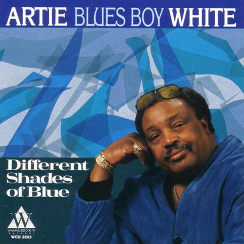

Artie "Blues Boy" White
Artie "Blues Boy" White was an American blues and soul singer and guitarist based in Chicago, who was described as "one of the foremost Chicago practitioners of Southern Soul music".
Complete Discography & Tracklists (3)